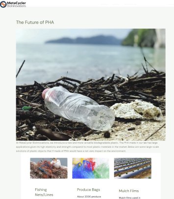
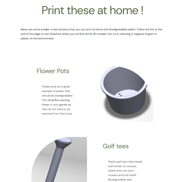

For this project the company wanted to present why PHA can be a critical gear change in reducing the negative impact of human activities on the environement.
To do so, I created a web page on the company's website that addresses the future of PHA but also a page that addresses ways a person at home could have a positive impact.
By using Wordpress a software that allows the company to create and host their own website, I created two webpages , one of which addresses a larger scale impact of PHA and the other presenting 3D models that I created which you can accesss through the company's GrabCad and print at home with biodegradable plastic.
The result of this web design can be seen on the company's website it self at this link metacycler at the "The Future of PHA" page and the following pages that can be acessed from there. As well as the link to the GrabCad.